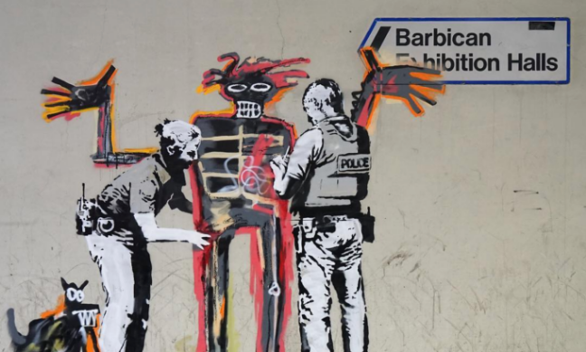
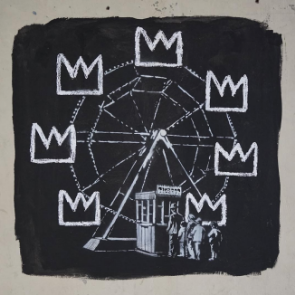

Stefanie Im | Mar 31, 2019

Banksy, the notorious anonymous British street artist has confirmed his pop-up work on his official Instagram, captioned - “Major new Basquiat show opens at the Barbican—a place that is normally very keen to clean any graffiti from its walls.”

The night before the opening of a Jean-Michel Basquiat’s exhibition at the Barbican in London, two new Banksys appeared on the walls on the center.
The works are perhaps a homage to the young artist who rose to fame in the late 1970s in the streets of NYC through his bold works referring to African history, slavery and colonialism.
Banksy seems to be referencing the iconic Basquiat crown motifs and figures from Basquiat’s Boy and Dog in a Johnnypump (1982) to speak out about racial profiling while also challenging the Barbican’s strict graffiti removal policy.